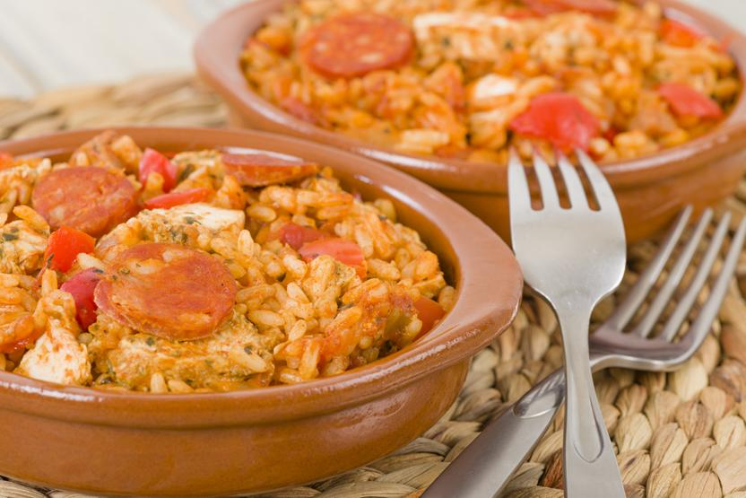
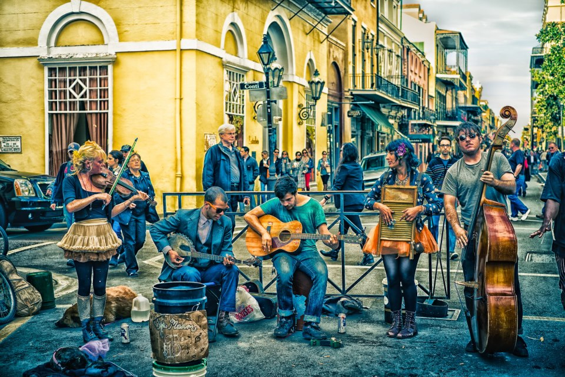

New Orleans
My Top Three Must Do's
The Food
Now I am a lover of all things food, and I've heard the cuisine in New Orleans is some of the best.

From Crawfish to Gumbo, New Orleans definitely has a variety of blue collar food jam packed with flavor and spice! Also, the traditional desserts and pastries sound amazing. Bananas Foster consisting of a tableside flambe and beignets with some powdered sugar. It all sounds so wonderful.
The Music
New Orleans is known for it jazzy street music. Jazz, brass, R&B and soul fill the air when you walk down the streets at night.

New Orleans is the home of many music clubs and restaurants that offer the traditional jazz music people travel to New Orleans to here. It also contributes heavily to their night life and parades, especially Mardi Gras.
The French Quarter
Finally, the last destination, and the one to which I am looking most forward to: The French Quarter.

It is one of my many dreams to walk the French Quarter: the oldest district in New Orleans. Built in the early eighteenth century, this district contains many historic buildings. For a history buff and a lover of architecture, this is equivalent to Disney Land.